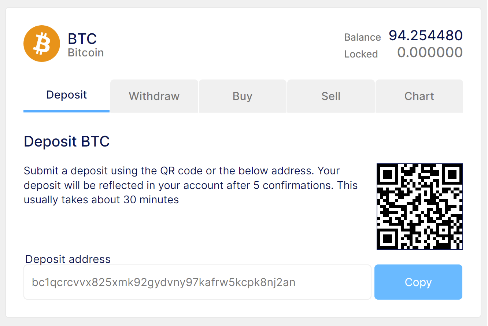

Select the preferred digital asset and click on Deposit on the right side of the page. For first-time deposits, you will need to generate a new address. Transfers to this address (for your preferred asset) will be credited to your Yellow wallet.
Please note that each digital asset has its own address (depending on the blockchain). Kindly make sure that the address supports that asset. Some addresses will include a Tag/Memo, so it is important that you fill this detail in, if available.
Once the transfer has been initiated, it needs to be confirmed on the blockchain. Different assets have different requirements of confirmations before it will be credited to your Yellow wallet. In the image below, it requires 6 confirmations on the blockchain before the deposit for CVC will be credited.
Thank you for following CoinPort.
June 2022